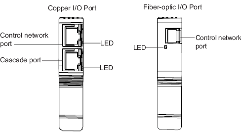

I/O Port LEDs
The CHARM I/O Carrier and WirelessHART I/O Carrier house a primary and
secondary I/O Port (IOP). There are two types of IOPs: a copper IOP and a
fiber-optic IOP. The copper IOP consists of a control network port and a
cascade port. The fiber-optic IOP consists of a control network port
only.

| LED color and pattern | Description and corrective action |
|---|---|
| Flashing green | The link is established and active Ethernet traffic is being transmitted and received. This is the normal operating condition when the cascade port is enabled. |
| Solid green | The link is established, but no Ethernet traffic is occurring. This indicates that the cascade port is enabled and connected to a network switch, but may not be connected to a controller or ProfessionalPlus workstation. This typically occurs during initial installations when network connections are not yet complete. |
| Off | This is the normal operating condition when the cascade port is disabled. When the cascade port is enabled, the LED blinks green indicating the normal operating condition. Use the CIOC or WIOC Property page in DeltaV Explorer to enable the cascade port. |